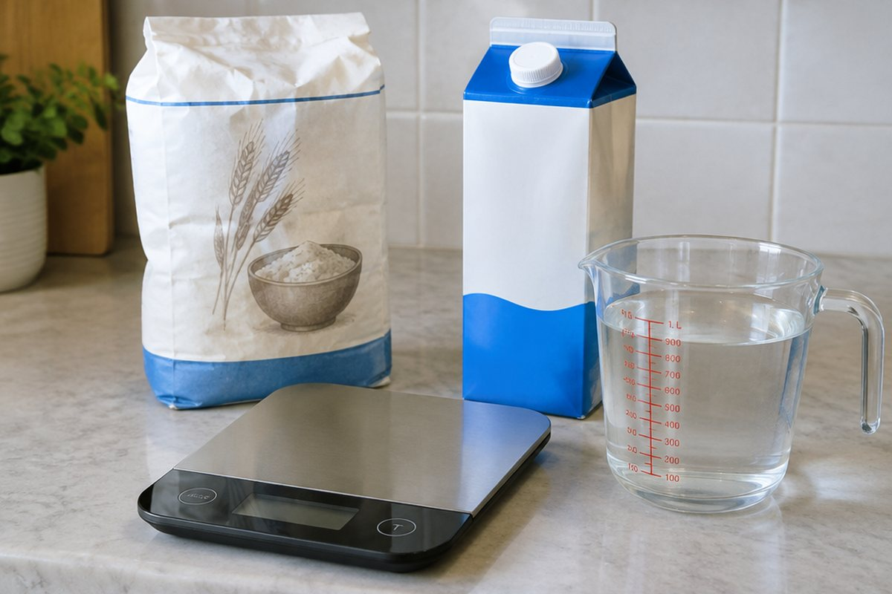

물병에 물이 얼마나 들어갈까?

우유갑과 물통 중 어느 쪽에 물이 더 많이 들어갈까요? 수박과 사과 중 어느 쪽이 더 무거울까요? 들이와 무게를 재는 단위를 알아봐요.
들이와 단위 L, mL
그릇 안에 담을 수 있는 양을 '들이'라고 해요. 들이의 단위에는 L(리터)와 mL(밀리리터)가 있어요.
1L = 1000mL예요. 1L보다 300mL 더 많은 들이는 1L 300mL이고, 1300mL와 같아요.
1L 300mL = 1000mL + 300mL = 1300mL
무게와 단위 kg, g, t
물건이 무거운 정도를 무게라고 해요. 무게의 단위에는 g(그램), kg(킬로그램), t(톤)이 있어요.
1kg = 1000g이고, 아주 무거운 트럭 같은 것은 1t = 1000kg을 써요. 2kg 500g은 2500g과 같아요.
2kg 500g = 2000g + 500g = 2500g
이렇게 풀어요: 들이의 덧셈
1L 300mL + 2L 800mL를 풀어 볼까요? ① mL끼리 더하면 300 + 800 = 1100mL. ② 1000mL는 1L이므로 1100mL = 1L 100mL.
③ L끼리 더하면 1 + 2 = 3L이고, 올라온 1L를 더해 4L. 답은 4L 100mL예요.
1L 300mL + 2L 800mL = 4L 100mL
이렇게 풀어요: 무게의 뺄셈
3kg 200g − 1kg 500g을 풀어 볼까요? 200g에서 500g을 뺄 수 없어요. 1kg을 1000g으로 바꿔 2kg 1200g으로 생각해요.
1200 − 500 = 700g, 2 − 1 = 1kg이라서 답은 1kg 700g이에요. 들이의 뺄셈도 1L를 1000mL로 바꾸어 같은 방법으로 해요.
3kg 200g − 1kg 500g = 1kg 700g
핵심 낱말
- 들이
- 그릇 안에 담을 수 있는 양
- L와 mL
- 들이의 단위, 1L = 1000mL
- 무게
- 물건이 무거운 정도
- kg과 g
- 무게의 단위, 1kg = 1000g
- t(톤)
- 1000kg을 나타내는 무게 단위
한 줄 정리
- 들이는 담을 수 있는 양이고 1L = 1000mL예요.
- 무게의 단위는 g, kg, t이고 1kg = 1000g, 1t = 1000kg이에요.
- 같은 단위끼리 계산하고, 1000이거나 1000보다 크면 1000을 큰 단위 1로 바꿔요.
학교 교육과정 연결
- [4수03-18] 1L와 1mL의 관계를 이해하고, 들이를 ‘몇 L 몇 mL’와 ‘몇 mL’로 표현할 수 있다.
- [4수03-21] 1kg과 1g의 관계를 이해하고, 무게를 ‘몇 kg 몇 g’과 ‘몇 g’으로 표현할 수 있다.
- [4수03-19] 실생활 문제 상황과 연결하여 들이의 덧셈과 뺄셈을 할 수 있다.